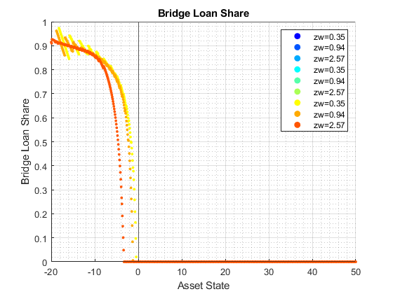
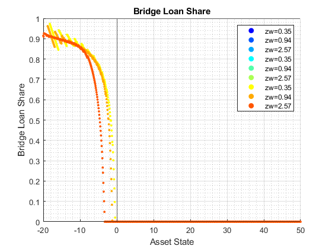
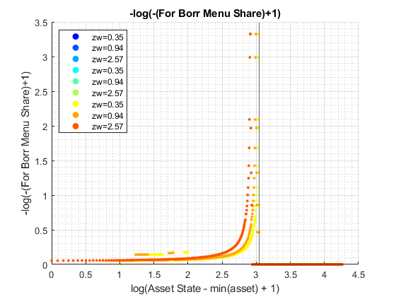
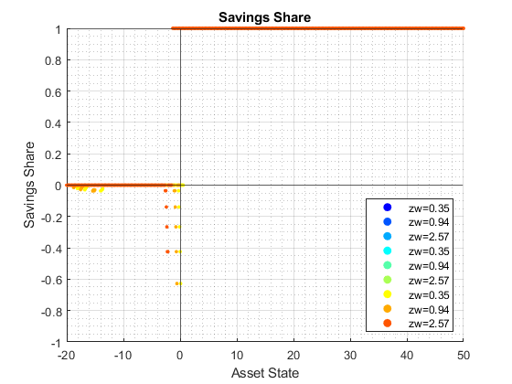
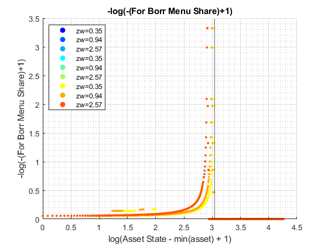
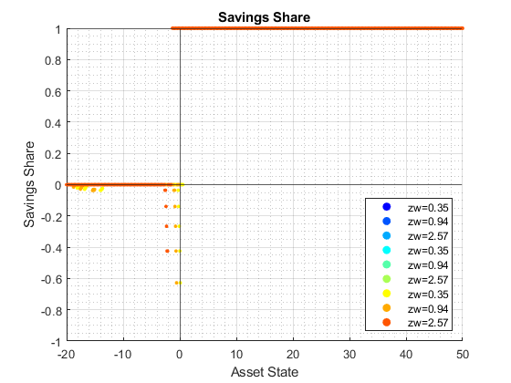

Derive Distributions for For+Inf+Borr+Save One Asset (Wrapper)
back to Fan's Dynamic Assets Repository Table of Content.
Contents
function [result_map] = ff_abz_fibs_ds_wrapper(varargin)
FF_abz_fibs_FIBS_DS_WRAPPER finds the stationary asset distributions
This is a warpper function. Note that abz and abz_fibs will not produce the same results even when formal and informal borrowing rates are the same, because they are solved differently, one where asset is principles only, and the other where asset has both principles as well as interest rates.
Default
- it_subset = 5 is basic invoke quick test
- it_subset = 6 is invoke full test
- it_subset = 7 is profiling invoke
- it_subset = 8 is matlab publish
- it_subset = 9 is invoke operational (only final stats) and coh graph
it_param_set = 8; bl_input_override = true; [param_map, support_map] = ffs_abz_fibs_set_default_param(it_param_set); % Note: param_map and support_map can be adjusted here or outside to override defaults % param_map('it_a_n') = 750; % param_map('it_z_n') = 15; % param_map('fl_r_fsv') = 0.025; % param_map('fl_r_inf') = 0.045; % param_map('fl_r_inf_bridge') = 0.045; % param_map('fl_r_fbr') = 0.035; % param_map('st_analytical_stationary_type') = 'loop'; % param_map('st_analytical_stationary_type') = 'vector'; param_map('st_analytical_stationary_type') = 'eigenvector'; % get armt and func map [armt_map, func_map] = ffs_abz_fibs_get_funcgrid(param_map, support_map, bl_input_override); % 1 for override default_params = {param_map support_map armt_map func_map};
Parse Parameters 1
% if varargin only has param_map and support_map, params_len = length(varargin); [default_params{1:params_len}] = varargin{:}; param_map = [param_map; default_params{1}]; support_map = [support_map; default_params{2}]; if params_len >= 1 && params_len <= 2 % If override param_map, re-generate armt and func if they are not % provided bl_input_override = true; [armt_map, func_map] = ffs_abz_fibs_get_funcgrid(param_map, support_map, bl_input_override); else % Override all armt_map = [armt_map; default_params{3}]; func_map = [func_map; default_params{4}]; end % if profile, profile DP + Dist here support_map('bl_profile_dist') = false; % append function name st_func_name = 'ff_abz_fibs_ds_wrapper'; support_map('st_profile_name_main') = [st_func_name support_map('st_profile_name_main')]; support_map('st_mat_name_main') = [st_func_name support_map('st_mat_name_main')]; support_map('st_img_name_main') = [st_func_name support_map('st_img_name_main')];
Parse Parameters
% param_map params_group = values(param_map, {'st_analytical_stationary_type'}); [st_analytical_stationary_type] = params_group{:}; % support_map params_group = values(support_map, ... {'st_profile_path', 'st_profile_prefix', 'st_profile_name_main', 'st_profile_suffix','bl_time'}); [st_profile_path, st_profile_prefix, st_profile_name_main, st_profile_suffix, bl_time] = params_group{:};
Start Profiler and Timer
Start Profile
if (it_param_set == 7) close all; profile off; profile on; end % Start Timer if (bl_time) tic; end
Solve DP
bl_input_override = true; result_map = ff_abz_fibs_vf_vecsv(param_map, support_map, armt_map, func_map);
Warning: Using only the real component of complex data. Warning: Using only the real component of complex data. Warning: Using only the real component of complex data. Warning: Using only the real component of complex data. Warning: Using only the real component of complex data.
 
 


  
  
Derive Distribution
if (strcmp(st_analytical_stationary_type, 'loop')) result_map = ff_az_ds(param_map, support_map, armt_map, func_map, result_map, bl_input_override); elseif (strcmp(st_analytical_stationary_type, 'vector')) result_map = ff_az_ds_vec(param_map, support_map, armt_map, func_map, result_map, bl_input_override); elseif (strcmp(st_analytical_stationary_type, 'eigenvector')) result_map = ff_az_ds_vecsv(param_map, support_map, armt_map, func_map, result_map, bl_input_override); end
----------------------------------------
xxxxxxxxxxxxxxxxxxxxxxxxxxxxxxxxxxxxxxxx
Summary Statistics for: cl_mt_pol_a
xxxxxxxxxxxxxxxxxxxxxxxxxxxxxxxxxxxxxxxx
----------------------------------------
fl_choice_mean
-2.3983
fl_choice_sd
4.9155
fl_choice_coefofvar
-2.0496
fl_choice_prob_zero
0.0597
fl_choice_prob_below_zero
0.6372
fl_choice_prob_above_zero
0.3030
fl_choice_prob_max
-1.4059e-29
tb_prob_drv
percentiles cl_mt_pol_aPercentileValues fracOfSumHeldBelowThisPercentile
___________ ___________________________ ________________________________
0.1 -20 0.12496
1 -20 0.12496
5 -14.393 0.36663
10 -9.7196 0.61634
15 -6.4486 0.78626
20 -4.3925 0.89652
25 -3.0841 0.97146
35 -1.6822 1.0672
50 -0.74766 1.1452
65 0 1.1605
75 0.28037 1.1551
80 0.46729 1.1498
85 0.84112 1.1336
90 1.4019 1.1106
95 2.3364 1.073
99 4.486 1.0229
99.9 7.2897 1.0033
----------------------------------------
xxxxxxxxxxxxxxxxxxxxxxxxxxxxxxxxxxxxxxxx
Summary Statistics for: cl_mt_pol_coh
xxxxxxxxxxxxxxxxxxxxxxxxxxxxxxxxxxxxxxxx
----------------------------------------
fl_choice_mean
-1.1183
fl_choice_sd
5.0339
fl_choice_coefofvar
-4.5012
fl_choice_prob_zero
0
fl_choice_prob_below_zero
0.4290
fl_choice_prob_above_zero
0.5710
fl_choice_prob_max
-1.4059e-29
tb_prob_drv
percentiles cl_mt_pol_cohPercentileValues fracOfSumHeldBelowThisPercentile
___________ _____________________________ ________________________________
0.1 -19.317 0.0289
1 -18.791 0.18029
5 -13.138 0.73208
10 -8.5783 1.2134
15 -5.4007 1.521
20 -3.3247 1.7115
25 -1.9888 1.8281
35 -0.56822 1.9351
50 0.41361 1.9396
65 1.2088 1.8172
75 1.6761 1.6973
80 1.9824 1.618
85 2.4209 1.5193
90 3.0104 1.3976
95 4.0384 1.2445
99 6.3944 1.0687
99.9 9.3851 1.0092
----------------------------------------
xxxxxxxxxxxxxxxxxxxxxxxxxxxxxxxxxxxxxxxx
Summary Statistics for: cl_mt_pol_c
xxxxxxxxxxxxxxxxxxxxxxxxxxxxxxxxxxxxxxxx
----------------------------------------
fl_choice_mean
1.3436
fl_choice_sd
0.2986
fl_choice_coefofvar
0.2223
fl_choice_prob_zero
0
fl_choice_prob_below_zero
0
fl_choice_prob_above_zero
1
fl_choice_prob_max
-1.4059e-29
tb_prob_drv
percentiles cl_mt_pol_cPercentileValues fracOfSumHeldBelowThisPercentile
___________ ___________________________ ________________________________
0.1 0.02 0.00022247
1 0.02 0.00022247
5 1.067 0.028483
10 1.0914 0.068699
15 1.1112 0.10911
20 1.1288 0.15079
25 1.1532 0.19326
35 1.2088 0.2909
50 1.3009 0.42029
65 1.4097 0.57218
75 1.5119 0.68158
80 1.54 0.73739
85 1.6292 0.79672
90 1.7028 0.85942
95 1.8492 0.92546
99 2.0999 0.9834
99.9 2.4014 0.99816
----------------------------------------
xxxxxxxxxxxxxxxxxxxxxxxxxxxxxxxxxxxxxxxx
Summary Statistics for: cl_mt_pol_b_bridge
xxxxxxxxxxxxxxxxxxxxxxxxxxxxxxxxxxxxxxxx
----------------------------------------
fl_choice_mean
-2.0832
fl_choice_sd
4.1489
fl_choice_coefofvar
-1.9916
fl_choice_prob_zero
0.5859
fl_choice_prob_below_zero
0.4141
fl_choice_prob_above_zero
0
fl_choice_prob_max
0.5859
tb_prob_drv
percentiles cl_mt_pol_b_bridgePercentileValues fracOfSumHeldBelowThisPercentile
___________ __________________________________ ________________________________
0.1 -18.696 0.0097077
1 -17.99 0.089709
5 -12.77 0.38001
10 -8.1951 0.62781
15 -5.1236 0.78531
20 -3.1289 0.88227
25 -1.8708 0.94068
35 -0.48998 0.99324
50 0 1
65 0 1
75 0 1
80 0 1
85 0 1
90 0 1
95 0 1
99 0 1
99.9 0 1
----------------------------------------
xxxxxxxxxxxxxxxxxxxxxxxxxxxxxxxxxxxxxxxx
Summary Statistics for: cl_mt_pol_inf_borr_nobridge
xxxxxxxxxxxxxxxxxxxxxxxxxxxxxxxxxxxxxxxx
----------------------------------------
fl_choice_mean
-0.1468
fl_choice_sd
0.1915
fl_choice_coefofvar
-1.3043
fl_choice_prob_zero
0.4565
fl_choice_prob_below_zero
0.5435
fl_choice_prob_above_zero
0
fl_choice_prob_max
0.4565
tb_prob_drv
percentiles cl_mt_pol_inf_borr_nobridgePercentileValues fracOfSumHeldBelowThisPercentile
___________ ___________________________________________ ________________________________
0.1 -0.8782 0.0071988
1 -0.71235 0.055311
5 -0.56075 0.21849
10 -0.46729 0.41355
15 -0.37829 0.53501
20 -0.3091 0.65596
25 -0.24505 0.75043
35 -0.14178 0.87752
50 -0.065118 0.98354
65 0 1
75 0 1
80 0 1
85 0 1
90 0 1
95 0 1
99 0 1
99.9 0 1
----------------------------------------
xxxxxxxxxxxxxxxxxxxxxxxxxxxxxxxxxxxxxxxx
Summary Statistics for: cl_mt_pol_for_borr
xxxxxxxxxxxxxxxxxxxxxxxxxxxxxxxxxxxxxxxx
----------------------------------------
fl_choice_mean
-0.5726
fl_choice_sd
0.5618
fl_choice_coefofvar
-0.9811
fl_choice_prob_zero
0.4742
fl_choice_prob_below_zero
0.5258
fl_choice_prob_above_zero
0
fl_choice_prob_max
0.4742
tb_prob_drv
percentiles cl_mt_pol_for_borrPercentileValues fracOfSumHeldBelowThisPercentile
___________ __________________________________ ________________________________
0.1 -2.6625 0.036805
1 -1.065 1
5 -1.065 1
10 -1.065 1
15 -1.065 1
20 -1.065 1
25 -1.065 1
35 -1.065 1
50 -1.065 1
65 0 1
75 0 1
80 0 1
85 0 1
90 0 1
95 0 1
99 0 1
99.9 0 1
----------------------------------------
xxxxxxxxxxxxxxxxxxxxxxxxxxxxxxxxxxxxxxxx
Summary Statistics for: cl_mt_pol_for_save
xxxxxxxxxxxxxxxxxxxxxxxxxxxxxxxxxxxxxxxx
----------------------------------------
fl_choice_mean
0.4043
fl_choice_sd
0.9161
fl_choice_coefofvar
2.2660
fl_choice_prob_zero
0.6033
fl_choice_prob_below_zero
0
fl_choice_prob_above_zero
0.3967
fl_choice_prob_max
-1.4059e-29
tb_prob_drv
percentiles cl_mt_pol_for_savePercentileValues fracOfSumHeldBelowThisPercentile
___________ __________________________________ ________________________________
0.1 0 0
1 0 0
5 0 0
10 0 0
15 0 0
20 0 0
25 0 0
35 0 0
50 0 0
65 0.093458 0.0084976
75 0.31734 0.068154
80 0.56075 0.12898
85 0.84112 0.20736
90 1.4019 0.34382
95 2.3364 0.56681
99 4.486 0.86441
99.9 7.2897 0.98043
xxx All Variables PERCENTILES AND STATS xxx
tb_outcomes_meansdperc: mean, sd, percentiles
mean sd coefofvar min max pYis0 pYls0 pYgr0 pYisMINY pYisMAXY p0_1 p1 p5 p10 p15 p20 p25 p35 p50 p65 p75 p80 p85 p90 p95 p99 p99_9
________ _______ _________ ________ ______ _______ _______ _______ __________ ___________ _______ ________ ________ ________ ________ _______ ________ ________ _________ ________ _______ _______ _______ ______ ______ ______ ______
cl_mt_pol_a -2.3983 4.9155 -2.0496 -20 49.626 0.05975 0.63725 0.303 0.014985 -1.4059e-29 -20 -20 -14.393 -9.7196 -6.4486 -4.3925 -3.0841 -1.6822 -0.74766 0 0.28037 0.46729 0.84112 1.4019 2.3364 4.486 7.2897
cl_mt_pol_coh -1.1183 5.0339 -4.5012 -19.555 53.286 0 0.42903 0.57097 7.8981e-05 -1.4059e-29 -19.317 -18.791 -13.138 -8.5783 -5.4007 -3.3247 -1.9888 -0.56822 0.41361 1.2088 1.6761 1.9824 2.4209 3.0104 4.0384 6.3944 9.3851
cl_mt_pol_c 1.3436 0.29863 0.22226 0.02 4.87 0 0 1 0.014945 -1.4059e-29 0.02 0.02 1.067 1.0914 1.1112 1.1288 1.1532 1.2088 1.3009 1.4097 1.5119 1.54 1.6292 1.7028 1.8492 2.0999 2.4014
cl_mt_pol_b_bridge -2.0832 4.1489 -1.9916 -19.496 0 0.58592 0.41408 0 2.6811e-10 0.58592 -18.696 -17.99 -12.77 -8.1951 -5.1236 -3.1289 -1.8708 -0.48998 0 0 0 0 0 0 0 0 0
cl_mt_pol_inf_borr_nobridge -0.1468 0.19148 -1.3043 -0.92595 0 0.45646 0.54354 0 4.0807e-06 0.45646 -0.8782 -0.71235 -0.56075 -0.46729 -0.37829 -0.3091 -0.24505 -0.14178 -0.065118 0 0 0 0 0 0 0 0
cl_mt_pol_for_borr -0.57262 0.5618 -0.9811 -2.6625 0 0.4742 0.5258 0 0.0079156 0.4742 -2.6625 -1.065 -1.065 -1.065 -1.065 -1.065 -1.065 -1.065 -1.065 0 0 0 0 0 0 0 0
cl_mt_pol_for_save 0.40427 0.91609 2.266 0 49.626 0.60329 0 0.39671 0.60329 -1.4059e-29 0 0 0 0 0 0 0 0 0 0.093458 0.31734 0.56075 0.84112 1.4019 2.3364 4.486 7.2897
xxx All Variables Fraction of Y Held up to Percentile xxx
tb_outcomes_fracheld: fraction of asset/income/etc held by hh up to this percentile
fracByP0_1 fracByP1 fracByP5 fracByP10 fracByP15 fracByP20 fracByP25 fracByP35 fracByP50 fracByP65 fracByP75 fracByP80 fracByP85 fracByP90 fracByP95 fracByP99 fracByP99_9
__________ __________ ________ _________ _________ _________ _________ _________ _________ _________ _________ _________ _________ _________ _________ _________ ___________
cl_mt_pol_a 0.12496 0.12496 0.36663 0.61634 0.78626 0.89652 0.97146 1.0672 1.1452 1.1605 1.1551 1.1498 1.1336 1.1106 1.073 1.0229 1.0033
cl_mt_pol_coh 0.0289 0.18029 0.73208 1.2134 1.521 1.7115 1.8281 1.9351 1.9396 1.8172 1.6973 1.618 1.5193 1.3976 1.2445 1.0687 1.0092
cl_mt_pol_c 0.00022247 0.00022247 0.028483 0.068699 0.10911 0.15079 0.19326 0.2909 0.42029 0.57218 0.68158 0.73739 0.79672 0.85942 0.92546 0.9834 0.99816
cl_mt_pol_b_bridge 0.0097077 0.089709 0.38001 0.62781 0.78531 0.88227 0.94068 0.99324 1 1 1 1 1 1 1 1 1
cl_mt_pol_inf_borr_nobridge 0.0071988 0.055311 0.21849 0.41355 0.53501 0.65596 0.75043 0.87752 0.98354 1 1 1 1 1 1 1 1
cl_mt_pol_for_borr 0.036805 1 1 1 1 1 1 1 1 1 1 1 1 1 1 1 1
cl_mt_pol_for_save 0 0 0 0 0 0 0 0 0 0.0084976 0.068154 0.12898 0.20736 0.34382 0.56681 0.86441 0.98043
End Profiler and Timer
End Timer
if (bl_time) toc; end % End Profile if (it_param_set == 7) profile off profile viewer st_file_name = [st_profile_prefix st_profile_name_main st_profile_suffix]; profsave(profile('info'), strcat(st_profile_path, st_file_name)); end
end
ans =
Map with properties:
Count: 22
KeyType: char
ValueType: any